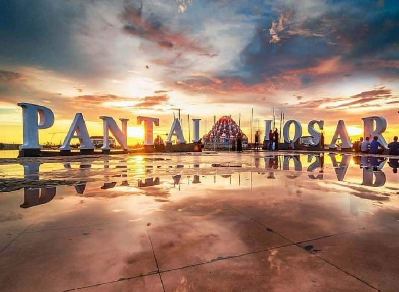
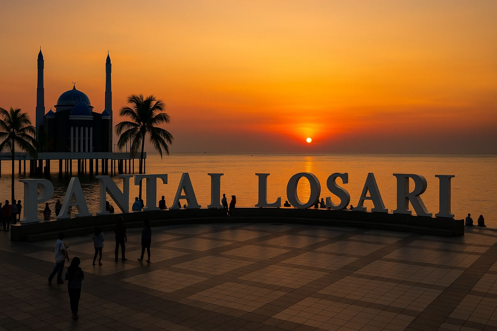
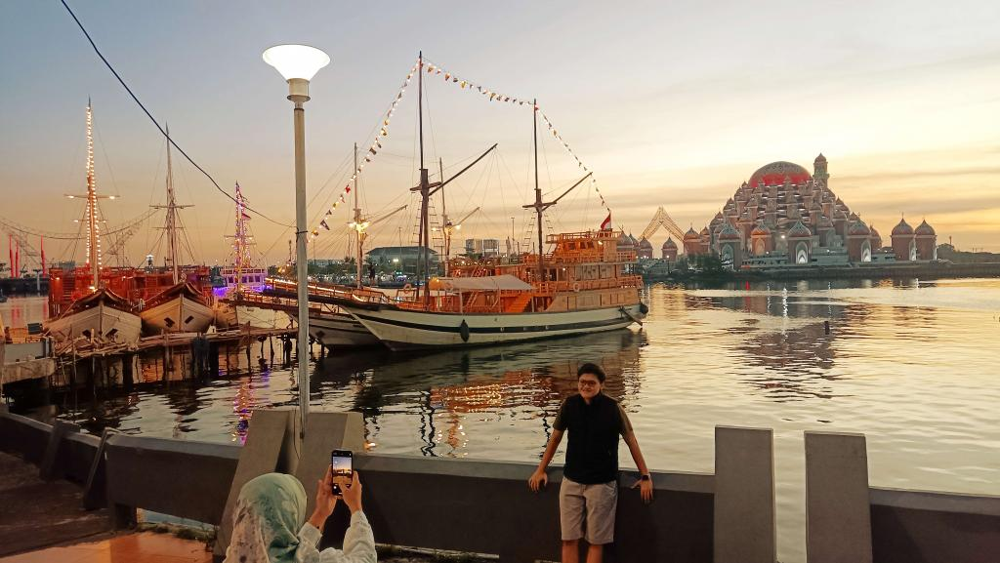
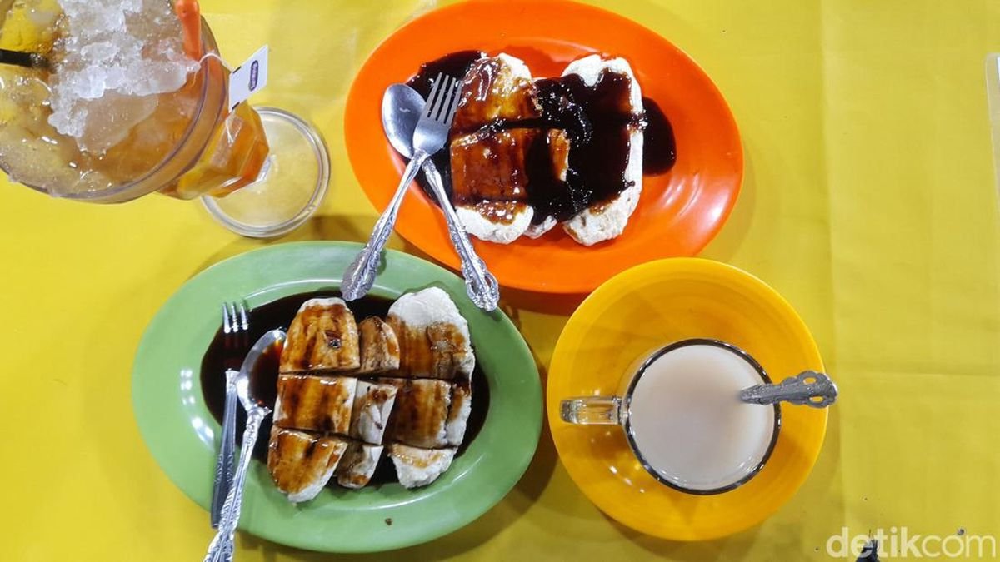
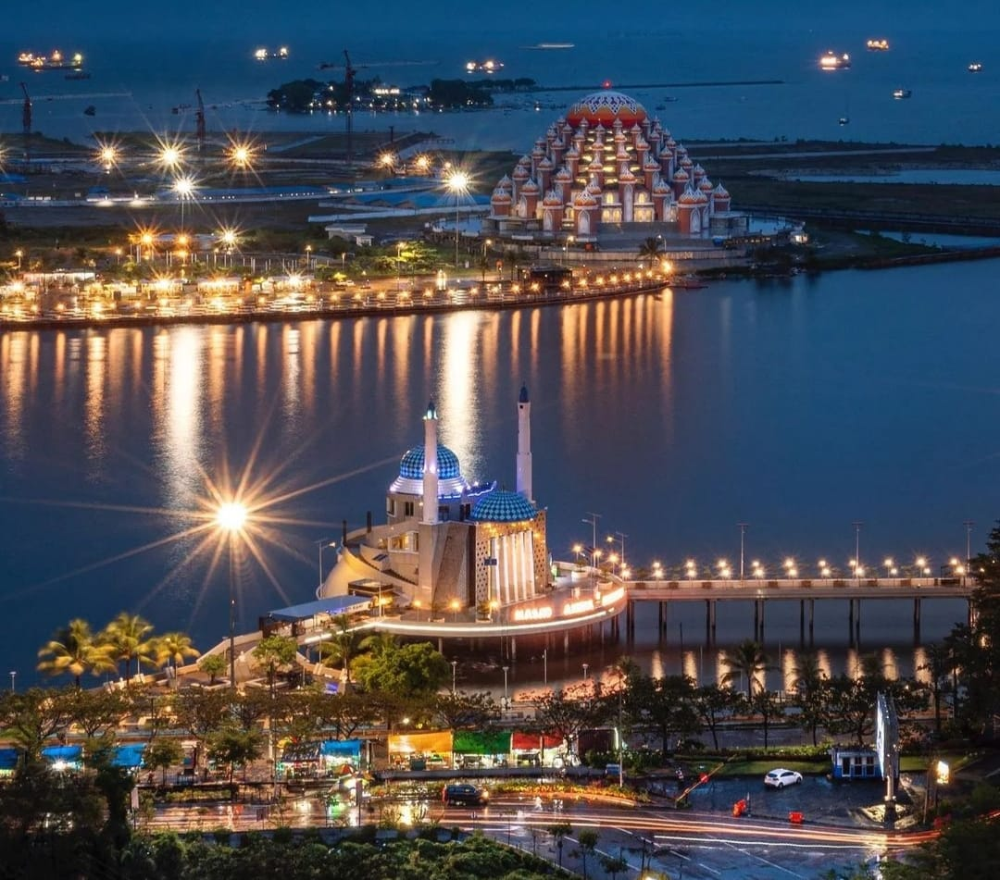

Ikon Kota Makassar, Sulawesi Selatan

Pantai Losari adalah destinasi wisata ikonik di Makassar, terkenal dengan pemandangan matahari terbenam yang indah. Buka 24 jam dan gratis.




Jalan Penghibur, Makassar, Sulawesi Selatan.
| Keterangan | Detail |
|---|---|
| Jam Buka | 24 jam |
| Tiket Masuk | Gratis |
| Waktu Terbaik | Sore hari |